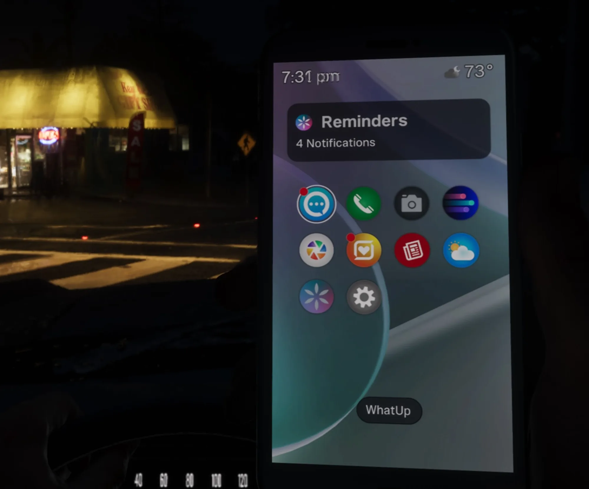

How to enter cheats
- In free roam, press Up on the D-pad to open your in-game phone.
- PS5: Hold L1 and press R1. Xbox: Hold LB and press RB.
- Enter the sequence on the D-pad. The directions are the same on both consoles.
Activating a cheat blocks saves and trophies or achievements for the session. Restart the game and load the save you made before enabling cheats.

19 Story Mode codes
The sources agree on the directional inputs below. When an unlock condition is unclear, check the entry under Progress → Cheats in your save.
Use your browser’s Print command for a paper or PDF reference. The directions are printed as text.
Player
- $250,000
Finish the main story.
Up, Right, Down, Left, Up, Left, Down, Right
- Drunk
Spend $2,500 on alcohol in game.
Up, Left, Right, Up, Up, Left, Right, Up, Left, Right
- Raise Heat Level
Lose a three-star wanted level 25 times.
Left, Down, Right, Down, Up, Down, Up
- Raise Wanted Level
Lose a three-star wanted level 50 times.
Left, Down, Right, Down, Up, Right, Up
- Unlimited Focus
Finish the main story.
Down, Up, Up, Down, Up, Down, Up, Down, Up, Right
- Body Armor
Complete 100 workouts.
Down, Up, Left, Up, Up, Up, Up, Up, Down, Down
Combat
- Max Ammo
Earn shooting-range medals at bronze or higher. The reported count varies.
Down, Up, Right, Down, Left, Left, Up, Up, Down, Left
- Infinite Ammo
Earn 25 shooting-range medals at silver or higher.
Down, Up, Right, Down, Left, Left, Up, Down, Down, Down
- No Reload
Earn 25 gold shooting-range medals.
Down, Up, Right, Down, Left, Left, Up, Down, Down, Up
- Attack Force
Finish the main story.
Down, Up, Left, Left, Right, Down, Down, Up, Down
- Exploding Balls
Deal explosive damage to 20 enemies in game.
Down, Up, Left, Left, Right, Down, Down, Up, Right
- Vehicle Force
Defeat 25 enemies with a vehicle in game.
Down, Up, Left, Left, Right, Down, Left, Up, Down
Vehicles
- Maibatsu Boomazoom
Finish five shopping challenges.
Left, Up, Right, Down, Left, Left, Up, Left
- MTL Pumper
Discover the fire truck in Progress.
Left, Up, Right, Down, Left, Right, Right, Up
- HVY Bulldozer
Discover the bulldozer in Progress.
Left, Up, Right, Down, Left, Right, Right, Down
Weather and filters
- Cycle Weather
Uncover the whole map.
Down, Right, Up, Down, Right, Up, Right
- Cataclysm
Discover Martha’s Vamos in Progress.
Down, Down, Up, Right, Right, Up, Left, Left, Right, Right
- Dollhouse
Spend eight hours with your partner in game.
Down, Down, Up, Right, Right, Up, Left, Left, Down, Right
- Faded Glory
Complete 50 store robberies with your partner in game.
Down, Down, Up, Right, Right, Up, Left, Left, Left, Right
How to unlock No Fall Damage
PowerPyx and 3DM report that this Story Mode cheat requires 20 survived falls from 40 feet. After finishing the story, check the entry under Progress → Cheats. The D-pad input for this effect remains unverified.
Why a code may do nothing
Check that you finished the story, unlocked the specific cheat and are in free roam. Open the phone’s home screen before using the shoulder buttons. Then enter the whole D-pad sequence in order. Four-digit mission door codes go into their in-world keypads.